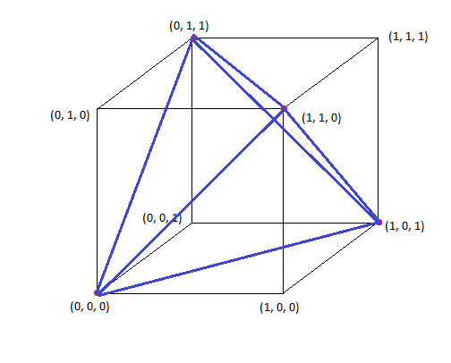

The Tetrahedron and 109.5 Degrees
When we look at regular polygons in 2D, we have an equilateral triangle with three sides and the square with 4 sides. Go up a dimension to 3D, and we have the good ol' cube that everyone knows about. But is there a natural extension of the equilateral triangle in 3 dimensions?This is where the regular tetrahedron comes in. A regular tetrahedron is a closed polyhedron with four equilateral triangular faces (all faces are congruent), where sets of 3 faces meet at a point. Here's a picture of a regular tetrahedron from a couple of different viewpoints:
The shape has four vertices and four faces. Each vertex is the same distance from every other vertex, which is the length of one of the sides of the triangles. Note that there can be tetrahedrons that aren't regular and don't have that property, just as there can be triangles that aren't equilateral. As the natural extension of triangles, tetrahedrons in general are very useful in geometry for a wide variety of things (e.g. decomposing volumes into tetrahedra as an analog of triangulating 2D polygons). But in addition to being a useful mathematical object, regular tetrahedra, in particular, arise very naturally in science. Take methane gas, for example (out of the many, many compounds with this property). Its chemical formula is CH4. It has a carbon atom in the center and four hydrogen atoms surrounding it. Here is a picture of a model of a methane molecule that I created in OpenGL:
As you can see, the hydrogen molecules (red) actually reside at the vertices of a tetrahedron, with the carbon atom (blue) in their center. And furthermore, this tetrahedron is regular (i.e. the distance between each pair of hydrogen molecules is the same). The reason for this is that each hydrogen molecule is identical, and wants to get as far away from every other hydrogen molecule as possible, but still be bonded with the carbon molecule. If two hydrogen molecules were closer to each other than they were to some other one, this would be an unstable configuration, and they would repel each other until there were equal forces from the other hydrogen molecule balancing them out.
You will often read in chemistry or biology textbooks that the angle between two of the outer atoms in a tetrahedral molecule is approximately 109.5 degrees. It used to bother me that this number seemed to come out of nowhere. But I can now show you a very solid mathematical proof of this fact if we assume the tetrahedral shape, using vectors.
- I will start by constructing a regular tetrahedron from the vertices of a cube. Start out with a cube and take a subset of 4 vertices such that each vertex is equidistant from all other vertices:
I did this by picking vertex (0, 0, 0) and then picking the three points that are across diagonals of the three faces coming out of (0, 0, 0): (0, 1, 1), (1, 1, 0), and (1, 0, 1). These points are all equidistant from each other, becuase every pair of points lie on the opposite side of a square face across a diagonal, and all squares are congruent since these are the faces of a cube. The distance between each point and every other point is sqrt(2) in this case. For those of you who know anything about binary or information theory, we had to pick a subset of 4 3-bit binary numbers whose Hamming Distance is 2; if we look at the coordinates as bits, every binary string differs by two bits out of the points that I chose (we need to change two coordinates to get from one point to another).
- Connecting the points shows that this is indeed a tetrahedron

-
What remains to be shown now is the whole 109.5 degree business. In order to do this, I need to add one more point to the picture we have, and that's the center atom (carbon in our CH4 methane example). This point gets added at the coordinate (0.5, 0.5, 0.5) right in the center of the cube, placing it equidistant from every corner of the cube and, in particular, the points we've chosen to represent the hydrogens:
Now calculate the angle between two vertices of the regular tetrahedron, I need to pick two of them and draw vectors to them from the center. In the above picture I chose points (0, 1, 1) and (1, 1, 0). We just find the angle between the two constructed vectors, and that's it! The process is as follows:
\[ v_1 = (0, 1, 1) - (0.5, 0.5, 0.5) = (-0.5, 0.5, 0.5) \] \[v_2 = (1, 1, 0) - (0.5, 0.5, 0.5) = (0.5, 0.5, -0.5) \]
Now use the dot product to compute the angle between v1 and v2: (NOTE: ||v|| means magnitude of vector v)
\[ v_1 \cdot v_2 = ||v_1||*||v_2||*cos(\theta) \]
\[ \theta = cos^{-1}( \frac{ v_1 \cdot v_2 }{||v_1||*||v_2|| } ) \]
\[ \theta = cos^{-1}( \frac{ -0.5*0.5 + 0.5*0.5 + -0.5*0.5 } { \sqrt{3*0.5^2} * \sqrt{3*0.5^2} } ) \]
\[ \theta = cos^{-1}(- \frac{1}{3} ) \]
So plug that into your calculator and you'll see that the inverse cosine of -1/3 is about 109.4712 degrees, or 109.5 rounded! The exact answer, however, is acos(-1/3). So there you have it, a nice mathematical proof on why the angle between vertices of a tetrahedral compound is 109.5 degrees.
blog comments powered by Disqus